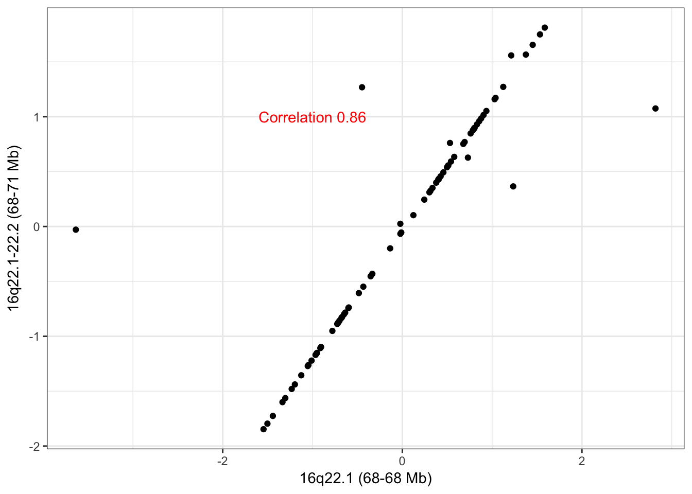
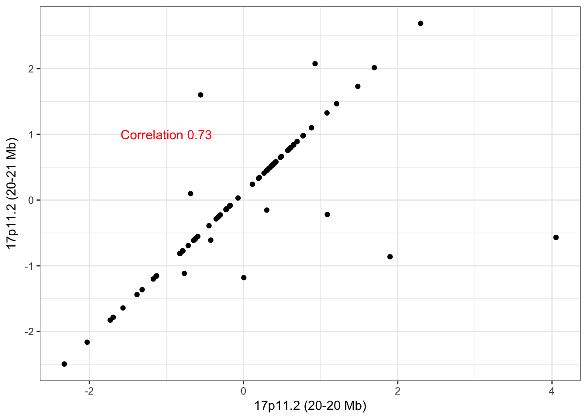
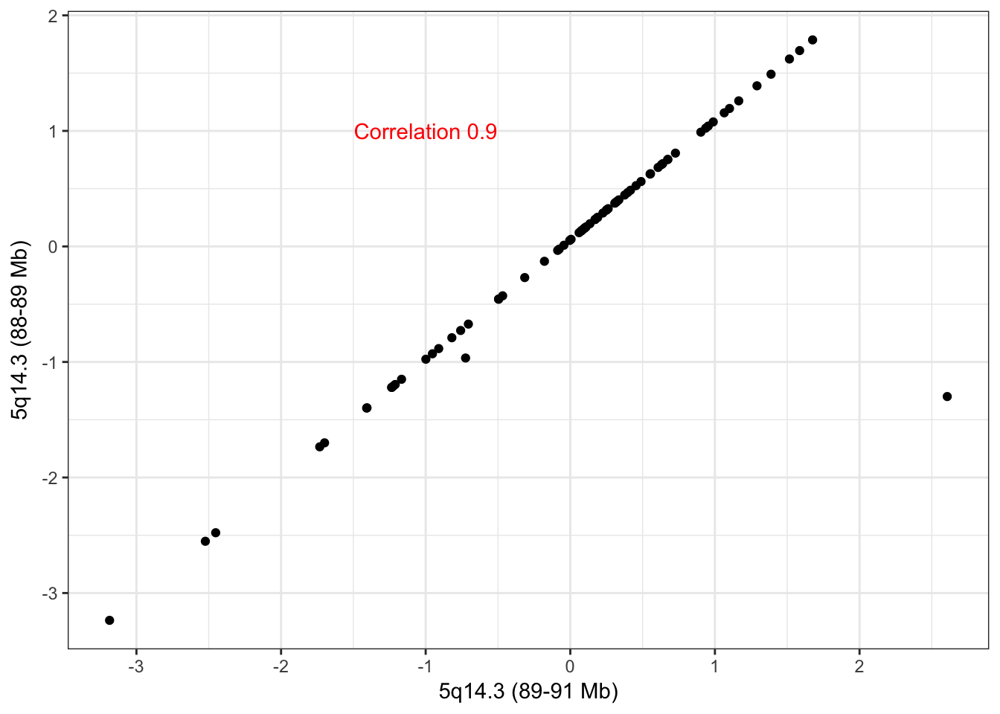
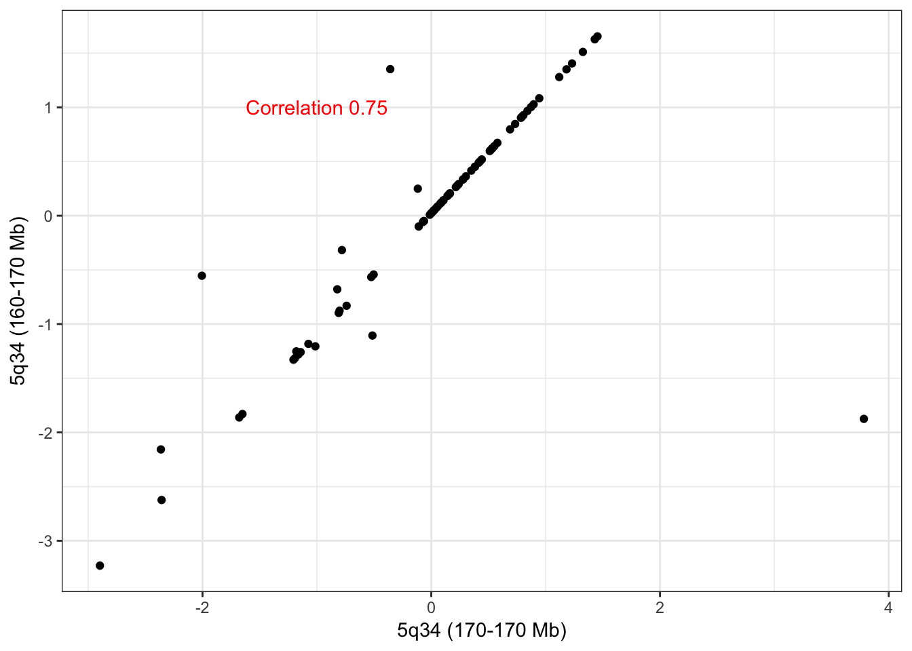
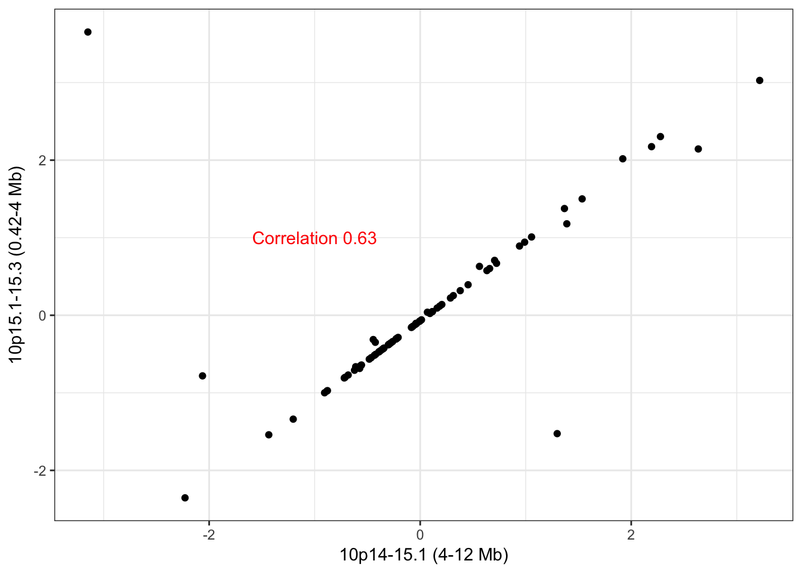
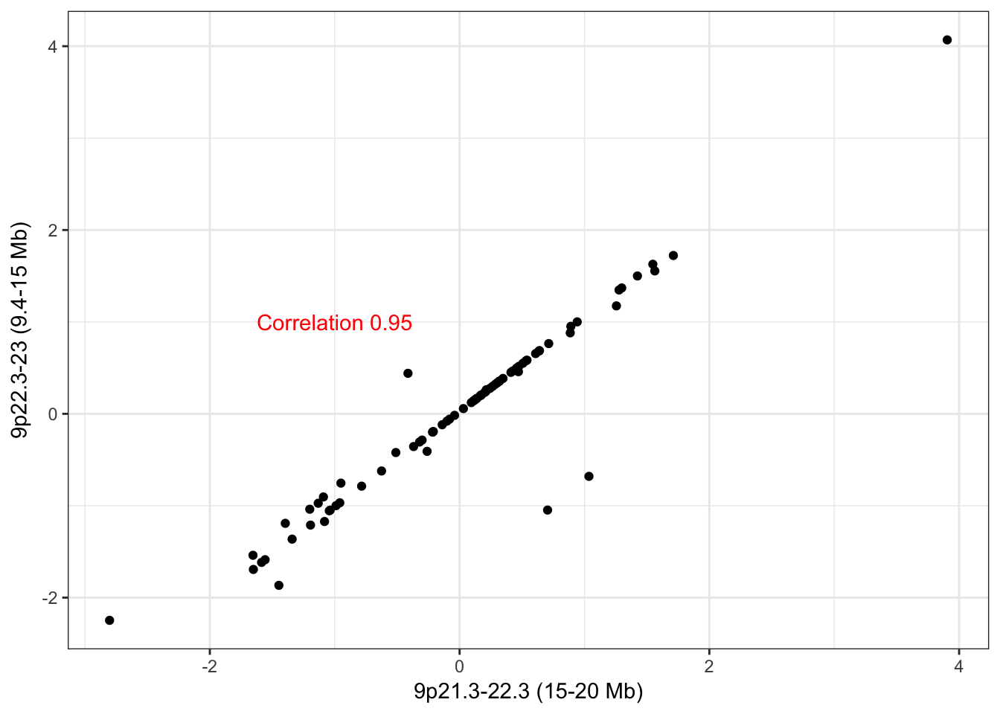

Some of the reported CNA hubs from the network analysis pipeline have very short genomic distances between themselves (i.e. ‘adjacent’) and ought to be considered for merging them into one CNA hub. By computing their Pearson correlation and enumerating common edges between adjacent CNA hubs, we can have a better idea on whether merging is appropriate. If two adjacent CNA hubs are highly correlated, it is very likely that these CNA hubs should have been merged into one CNA hub by the fixed-order clustering algorithm (Pei Wang, 2005), but were not merged due to a few outlying values (large sample discrepancies between two adjacent CNA). Additionally, knowing how large the CNA hub intervals are and how much overlap there is in edges helps determine whether one should consider merging the adjacent CNA hubs into one hub and bundling their corresponding trans edges. In what follows, we consider these factors for merging adjacent hubs on a case-by-case basis for CNA–protein and CNA–mRNA breast cancer networks, respectively.
Define functions to compute correlation between adjacent CNA hubs and to report the number of overlapping edges between them.
check_adjacent_correlation <- function(hub, show_plot = T, ecna = NULL) {
res <- round(cor(ecna[,hub[1]], ecna[,hub[2]]),2)
#if (show_plot & !is.null(ecna)) {
library(ggplot2)
gg <- ggplot2::qplot(x = ecna[,hub[1]], y = ecna[,hub[2]],
ylab = names(hub)[1],
xlab = names(hub)[2]) + theme_bw() +
annotate(geom="text", x=-1, y=1, label=paste("Correlation",
res),
color="red")
#}
#res
gg
}
num_common_hub_edges <- function(hub, ig) {
huba <- as_ids(E(ig)[inc(V(ig)$name %in% hub[1])])
hubb <- as_ids(E(ig)[inc(V(ig)$name %in% hub[2])])
a <- sapply(strsplit(x = huba, split = "|", fixed = TRUE), function(x) x[2])
b <- sapply(strsplit(x = hubb, split = "|", fixed = TRUE), function(x) x[2])
length(intersect(a, b))
}Load the protein and CNA data.
suppressPackageStartupMessages(library(Biobase))
protset <- readRDS(file = "data/prot-expression-set.rds")
y <- t(exprs(protset))
cnaset <- readRDS(file = "data/cna-expression-set.rds")
x <- t(exprs(cnaset))Load spaceMap’s CNA–protein network.
pgraphml <- "/Users/bioinformatics/repos/neta-bcpls/neta/spacemap-prot-boot-vote.graphml"
stopifnot(file.exists(pgraphml))
suppressPackageStartupMessages(library(igraph))
pig <- read_graph(file = pgraphml, format = "graphml")hubs <- c("16_68039840_68051376_0","16_68063383_71366920_0")
names(hubs) <- c("16q22.1-22.2 (68-71 Mb)", "16q22.1 (68-68 Mb)")The scatter plot of the adjacent CNA hubs on 16q22 show highly correlated CNA across patient samples. The few outliers are likely the cause of not having merged this into one cluster. Hub 16q22.1-22.2 (68-71 Mb) has 70 trans edges and hub 16q22.1 (68-68 Mb) has 16 trans edges with 10 common edges between the two hubs. Due to the high overlap, we believe these adjacent hubs ought to be merged and that they are directly an artifact of the CNA clustering stage. With the evidence available to us, we are not able to infer that the common trans edge is only driven by a few tumors that happen to have a long CNA covering both small CNA analyzed, as suggested by a thoughtful reviewer of our method.
check_adjacent_correlation(hub = hubs, ecna = x )
hubs <- c("17_20255440_20890727_0", "17_19777544_19864430_0")
names(hubs) <- c("17p11.2 (20-21 Mb)", "17p11.2 (20-20 Mb)")The scatter plot of the adjacent CNA hubs on 17p11.2 show well correlated CNA-profiles with the same outlier problem as 16q22. Hub 17p11.2 (20-21 Mb) has 5 trans edges and hub 17p11.2 (20-20 Mb) has 6 trans edges with 0 common edges between the two hubs. The lack of edge overlap makes us hesitant to merge these adjacent CNA hubs despite their proximity.
check_adjacent_correlation(hub = hubs, ecna = x )
Load spaceMap’s CNA–mRNA network.
rgraphml <- "/Users/bioinformatics/repos/neta-bcpls/neta/spacemap-rna-boot-vote.graphml"
stopifnot(file.exists(rgraphml))
library(igraph)
rig <- read_graph(file = rgraphml, format = "graphml")hubs <- c("5_88348122_89201306_0","5_89203610_90774367_0")
names(hubs) <- c("5q14.3 (88-89 Mb)","5q14.3 (89-91 Mb)")The scatter plot of the adjacent CNA hubs on 5q14.3 in the RNA data is like that of 16q22 in the protein data. The large outlier is likely the cause of not having merged this into one cluster. Hub 5q14.3 (88-89 Mb) has 97 trans edges and hub 5q14.3 (89-91 Mb) has 72 trans edges with 43 common edges between the two hubs. Due to the high overlap, we believe these adjacent hubs ought to be merged and that they are directly an artifact of the CNA clustering stage.
check_adjacent_correlation(hub = hubs, ecna = x )
hubs <- c("5_164621218_166461162_0","5_166465008_168130127_0")
names(hubs) <- c("5q34 (160-170 Mb)","5q34 (170-170 Mb)")Hub 5q34 (160-170 Mb) has 188 trans edges and hub 5q34 (170-170 Mb) has 8 trans edges, 7 of which overlap. These adjacent CNA hubs are very likely to be clustered together in the absence of outlying samples. Given the relatively high edge overlap we recommend a merger of the hubs.
check_adjacent_correlation(hub = hubs, ecna = x )
hubs <- c("10_424200_4026124_0","10_4028083_11642478_0")
names(hubs) <- c("10p15.1-15.3 (0.42-4 Mb)","10p14-15.1 (4-12 Mb)")Hub 10p15.1-15.3 (0.42-4 Mb) has 55 trans edges and hub 10p14-15.1 (4-12 Mb) has 61 trans edges, 6 of which overlap. Given the large size of these hubs (> 3Mb in each) and the limited overlap we do not think it is fully justified in merge these adjacent CNA hubs.
check_adjacent_correlation(hub = hubs, ecna = x)
hubs <- c("9_9411107_15241495_0","9_15259791_20352615_0")
names(hubs) <- c("9p22.3-23 (9.4-15 Mb)","9p21.3-22.3 (15-20 Mb)")Hub 9p22.3-23 (9.4-15 Mb) has 36 trans edges and hub 9p21.3-22.3 (15-20 Mb)has 7 trans edges, where all 7 of them overlap with its adjacent CNA hub. These ought to be merged.
check_adjacent_correlation(hub = hubs, ecna = x)
Copyright © 2017 Regents of the University of California. All rights reserved.